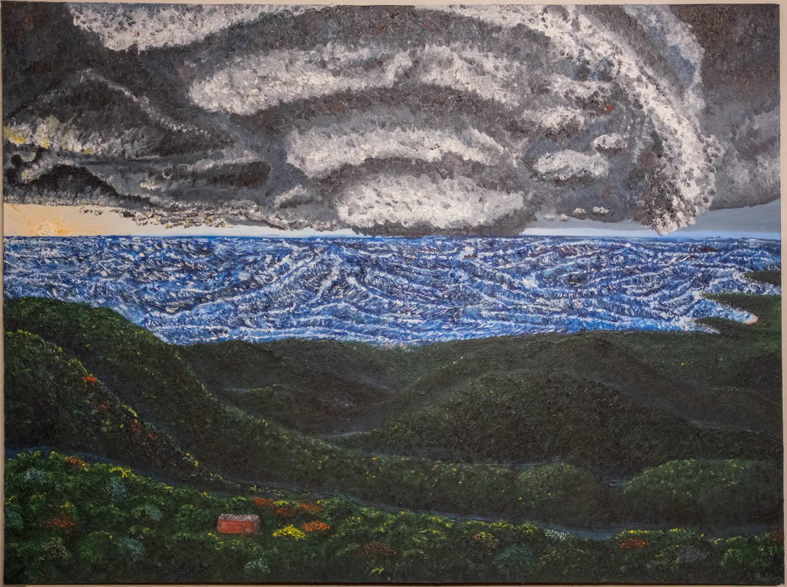
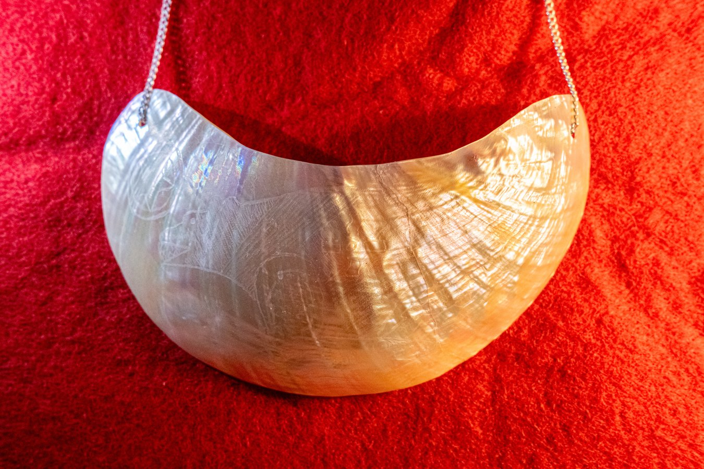
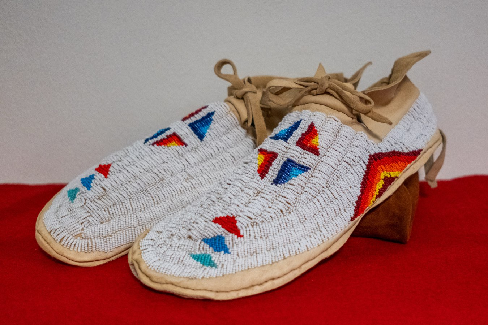
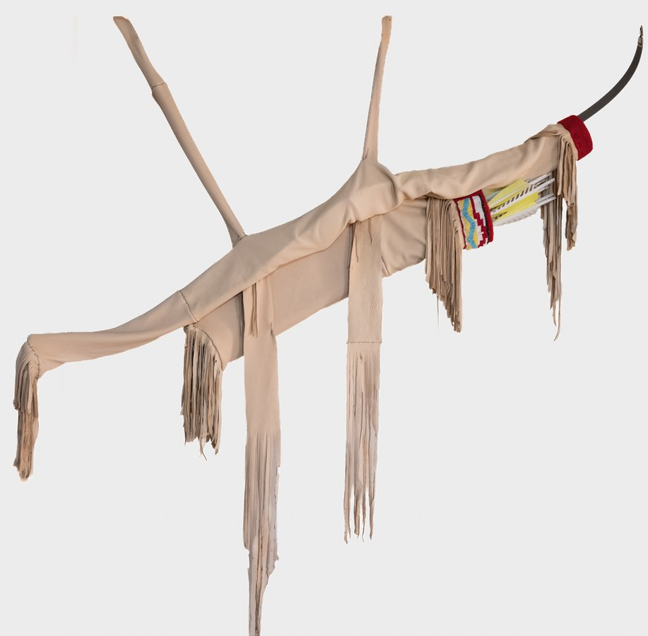
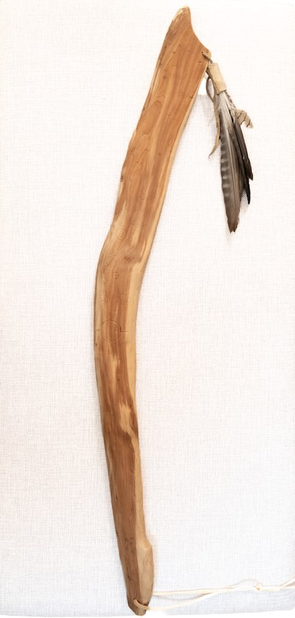
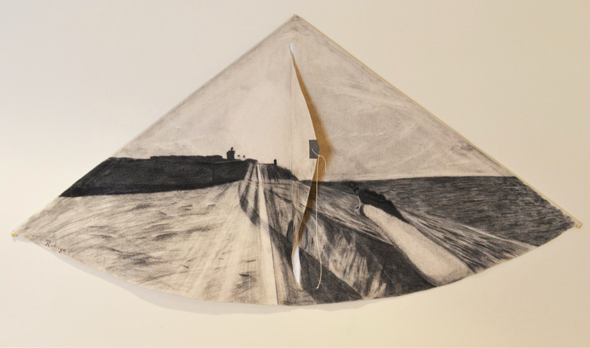
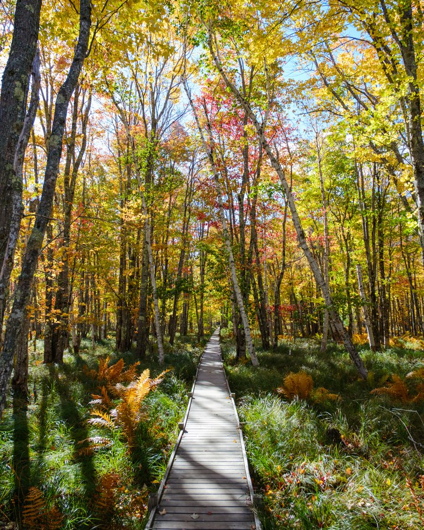

𐒰𐓤𐓘̋𐓹𐓟 · Haceres · Makings





Writings
- Tierra y memoria
The Daily Princetonian (The Prospect), 9 October 2022 - Huye Luna, Luna, Luna
El Nuevo Día, 23 July 2023
Español · English - Homo naledi, seres de la estrella creciente
El Nuevo Día, 7 June 2023
Español · English - Cuatro minutos: Starship y el inicio de una nueva era de exploración espacial
El Nuevo Día, 21 April 2023
Español · English - Universos paralelos de dos telescopios boricuas
El Nuevo Día, 16 October 2022
Español · English - El telescopio espacial James Webb y el futuro de la astronomía puertorriqueña
El Nuevo Día, 13 July 2022
Español · English
Exhibitions
- Center for Astrophysics | Harvard & Smithsonian Art Show, 2025: a night-sky photograph and a sunrise panorama from Acadia, Maine

𐓀𐓘́͘𐓻𐓘͘ · Tierra · Land